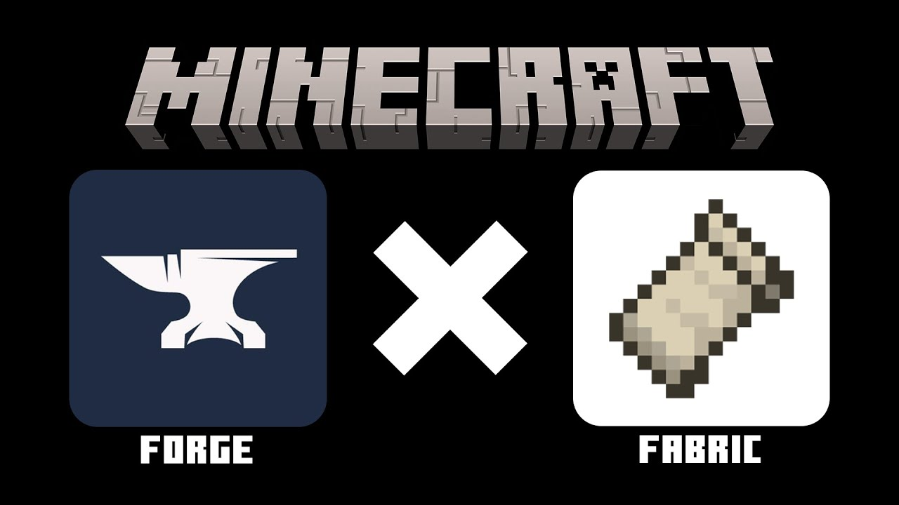

Як правильно встановлювати моди на майнкрафт
Покрокова інструкція з установки модів Етап 1: Встановлення завантажувача модів (Forge або Fabric) Більшості модів потрібен спеціальний завантажувач (mod loader) для роботи. Вибір залежить від того, який завантажувач підтримує потрібний вам мод. Завантажте завантажувач: Перейдіть на офіційний сайт Forge (files.minecraftforge.net) або Fabric (fabricmc.net). Обов'язково виберіть версію, сумісну з вашою версією Minecraft. Завантажте інсталятор (зазвичай це JAR-файл). Запустіть інсталятор: Двічі клацніть по завантаженому JAR-файлу. У вікні виберіть «Install client» (Встановити клієнт) і натисніть «ОК». Перевірте встановлення: Відкрийте лаунчер Minecraft. У лівому нижньому куті, поруч із кнопкою «Грати», виберіть створений профіль версії (наприклад, Forge або Fabric Loader). Етап 2: Завантаження файлів модів Знайдіть моди: Використовуйте надійні джерела, такі як CurseForge або офіційні сайти розробників модів. Переконайтеся, що моди сумісні з версією вашого завантажувача модів та версією Minecraft. Завантажте моди: Завантажте файли модів (зазвичай у форматі .jar) на свій комп'ютер. Не потрібно їх розпаковувати, якщо інше не зазначено в інструкції до моду. Етап 3: Переміщення модів у теку гри Відкрийте теку mods: Найпростіший спосіб — через лаунчер Minecraft. Запустіть гру з вибраним профілем (Forge/Fabric) до головного меню. У головному меню натисніть кнопку «Моди» (Mods). Потім натисніть кнопку «Відкрити теку модів» (Open Mods Folder) в нижньому лівому куті. Альтернативний спосіб для Windows: Натисніть клавіші Win + R, введіть %appdata% і натисніть Enter. Перейдіть у теку .minecraft, а потім відкрийте або створіть теку з назвою mods (усі малі літери). Скопіюйте файли модів: Перетягніть завантажені файли модів (.jar) у відкриту теку mods. Перезапустіть Minecraft: Закрийте гру та лаунчер Minecraft, а потім знову запустіть його, використовуючи той самий профіль завантажувача модів. Моди мають з'явитися у списку модів у грі. Поради та важливі моменти Сумісність версій: Це критично важливо. Моди для різних версій Minecraft (наприклад, 1.20.1 та 1.20.4) не працюватимуть разом. Залежності (Dependencies): Деякі моди вимагають наявності інших модів (наприклад, Fabric API для Fabric модів) для коректної роботи. Обов'язково завантажуйте всі необхідні залежності, зазначені на сторінці моду. Альтернативні лаунчери: Ви можете використовувати сторонні лаунчери, такі як CurseForge Launcher, які автоматизують процес установки модів і модпаків. Проблеми: Якщо виникають проблеми, переконайтеся, що у вас встановлена правильна версія Java (для нових версій Minecraft може знадобитися Java 17 або 21).
